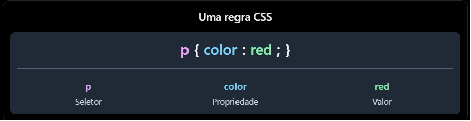

O css inline é difícil de manter, repetitivo e pouco utilizável. Portanto, não é recomendado para utilização profissional.
O CSS interno é mais fácil de manter, mas ainda assim não é recomendado para utilização profissional, pois não é reutilizável.
A melhor prática possível e também a mais profissional é a utilização de CSS externo. Usaremos a link:css no head do documento HTML para linkar o arquivo CSS externo. Dessa forma, conseguimos manter o código mais limpo, organizado e reutilizável.
Para resumir, abaixo está a anatomia de uma tag css:
